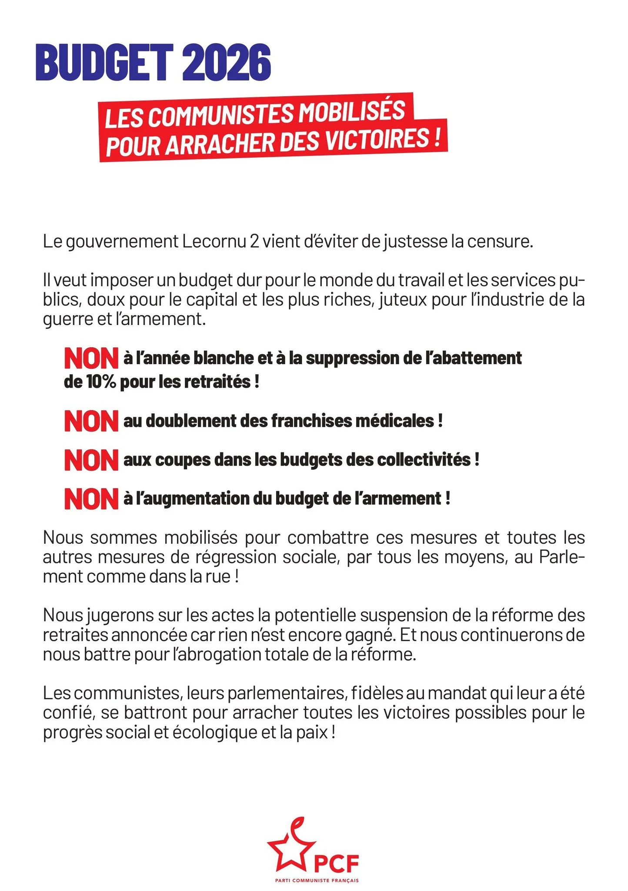

Tract
« Budget 2026. Les communistes mobilisés pour arracher des victoires ! »
Date indiquée par Facebook · 17 octobre 2025
Repères éditoriaux
Dans ce tract, le PCF conteste le doublement des franchises médicales, les coupes dans les budgets des collectivités et l’augmentation du budget de l’armement. Il défend la hausse des salaires, l’abrogation de la réforme des retraites et des critères sociaux et environnementaux pour les aides aux entreprises.

Sources
Archive rouge · document diffusé sur Facebook · AR-0002-FB-00978
À lire aussi · « Vérité sur les salaires » : des responsables communistes et des travailleurs reçus à Matignon - Vidéo Dailymotion